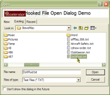

VB5 Common Dialog with Picture Preview (27K)
VB5 Common Dialog with Picture Preview (27K)
 VB5 VB Style File Open Dialog (31K)
VB5 VB Style File Open Dialog (31K)
 VB6 Common Dialog with Picture Preview (25K)
VB6 Common Dialog with Picture Preview (25K)
 VB6 VB Style File Open Dialog (30K)
VB6 VB Style File Open Dialog (30K)
 19 Dec 2002
19 Dec 2002
Added VB6 version
 Subclassing Without The Crashes
Subclassing Without The Crashes
 Common Dialog Templates - Create a WinZip Style File Add Dialog
Common Dialog Templates - Create a WinZip Style File Add Dialog

Common Dialog Hooks - Create a VB Style Open Project Dialog
Using Hooks to Create Fully-Featured File Dialogs
This sample, completely rewritten from an original sample at this site by Mark Grimes (kapag@tir.com), demonstrates how to create a full VB-style Open project dialog by taking advantage of the Hook support provided in the CommonDialog/Direct DLL component.
Implementing a hook for a Common Dialog allows numerous messages in the dialog to be intercepted. In this case, the dialog open notification is utilised to capture elements from a VB form into the common dialog, and OK/Cancel button clicks are intercepted to determine whether to close the VB form. The result is an excellent way of creating customised File Open dialogs which additionally show your own fields.
There is another way to implement this sort of functionality, which is to use Common Dialog Templates. Cayce Cochran rose to the challenge of making templates work in VB, and you can see the result in the sample Common Dialog Templates. Excellent stuff, but the approach only supports the standard Windows controls. If you need something more, then hooking the dialog and combining it with a VB form is the way to go.
The only difficulty with it is that the coding to get all the items in the right place, and working out the tabbing, can be pretty tedious and error prone. Since the only way to ensure tabbing works correctly is to use a Windows Keyboard Hook, you will probably also find it difficult to debug...
However, just because something is difficult shouldn't stop you because great results are possible. Download the sample code, add a load of Debug.Print messages and give it a try!